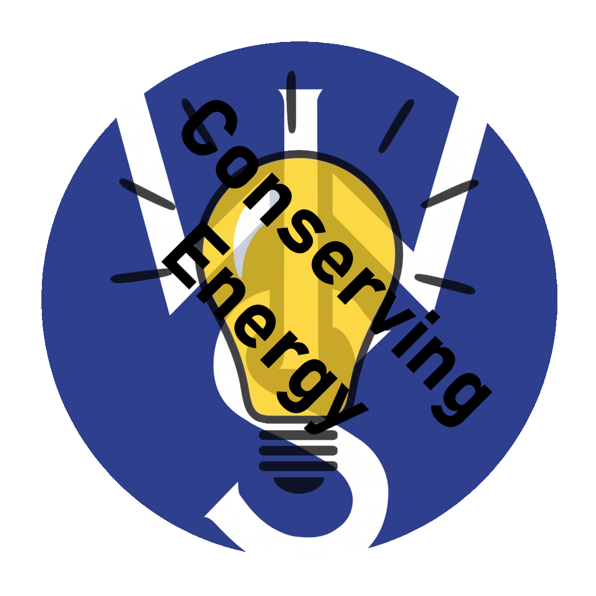

The Problem

What's the issue on energy right now?
Conserving energy is important, as energy isn't . Although we do have sustainable alternatives for producing energy, those alternatives doesn't ensure energy to be stable at all times.
The Problem
What's the issue on energy right now?
Renewable? Non-renewable?
Identifies what source of energy do we have, and what can they do.
Environmental Issues
The impact on our environment associated with high-level use
Conserving Energy
How to conserve energy?
Economics Pros and Cons

Advantages and disadvantages considering the economics of conserving energy.